Linux程序开发指南 - Windows交叉编译环境
目标
本文档简单介绍了如何在Windows系统下交叉编译、跨系统调试ARM Linux设备的方法。
嵌入式Linux系统的应用程序开发，编译器一般是gcc，一般都说是要在Linux虚拟机中进行开发和编译。本文提供了一种能够在Windows系统下编译、调试Linux应用程序的方法，可大大简化Linux软件开发环境的搭建难度，保留原开发人员的操作习惯，让Linux程序开发和开发VxWorks一样方便快捷。
学习内容
安装软件
本文所有软件，在部门NAS/FTP服务器中均有备份，但建议从网上下载更新的版本。
Eclipse IDE for C/C++ Developers
下载地址：http://www.eclipse.org/downloads/packages/eclipse-ide-cc-developers/neon2
- 选择Eclipse CDT版，专门用于C/C++开发
- Eclipse下载后，无需安装配置，直接解压即可运行，可放快捷方式到桌面
错误处理：
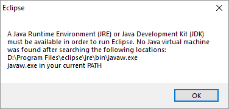
请安装JRE独立安装版后再试。如还报错，在桌面Eclipse快捷方式的exe路径后，添加-VM xxx参数，指定准确的JRE目录下javaw.exe路径，如：
"D:\Program Files\eclipse\eclipse.exe" -VM "C:\Program Files\Java\jre1.8.0_161\bin\javaw.exe"
注意路径中有空格的，一定要将整个路径用“”双引号包起来。最后修改效果如下图：
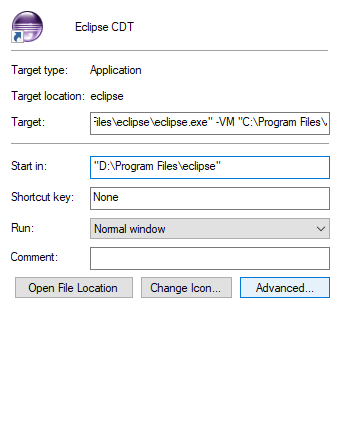
交叉编译工具Linaro GCC
下载后，请使用7zip、WinRAR等工具解压至类似D:\gcc路径，不要有中文目录、空格目录，路径尽量简短。如有报错请忽略（因安装包中有Linux系统中的符号链接，Windows不支持）。解压后目录结构如下：
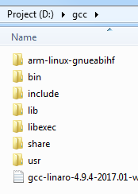
其中主要的几个目录位置如下：
bin/ 交叉编译工具目录
arm-linux-gnueabihf/libc/usr/include Linux user-space程序头文件目录
添加环境变量：
解压文件后，将arm-linux-gnueabihf-gcc所在的D:\gcc\bin目录，添加到系统PATH环境变量中（系统属性-高级属性-环境变量），确保在任何位置调用arm-linux-gnueabihf-gcc均能成功。
测试：
开始 - 运行 - cmd，运行arm-linux-gnueabihf-gcc --version应有正确结果。
WSL Windows Subsystem for Linux
如Windows系统为Win10专业版，可以安装WSL系统，可以在Windows下运行Ubuntu虚拟机，对我们的应用层开发工作很有帮助。具体安装过程、方法见微软官方文档：
如何在Windows 10系统下开启WSL子系统
https://docs.microsoft.com/en-us/windows/wsl/install-win10
如何手动离线安装Ubuntu等发行版系统
https://docs.microsoft.com/en-us/windows/wsl/install-manual
安装后，我们再通过第二章中的方法，修改apt源，安装常用软件，就可以在Windwows中进行几乎所有的Linux软件安装、编译等工作了。
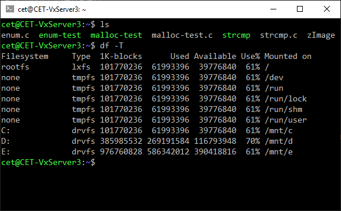
Cygwin
如果系统不是Win10或专业版，我们需要使用第三方的软件模拟Linux控制台。通常这个软件是Cygwin（当然也可以是MinGW的Minsys）。
下载地址：https://cygwin.com/install.html
根据安装向导进行在线安装，随本文档提供离线安装包 注意：
- 源选择国内的某个edu.cn源，或网上寻找合适的国内源（如163mirror）
- 软件包选择一定要包含“man”包，其他开发包根据需要可以以后追加 安装完成后，就可以在Windows环境使用Linux命令了
Linux API man库
在上面两个步骤我们安装WSL或者Cygwin的目的，是为了方便在Windows开发环境中随时查阅Linux、glibc的API手册。Linux提供了一套man命令，用来显示软件的使用手册、同时也可以显示API的使用说明。对Linux开发来说，这是非常重要的一个工具，远比翻书来的快速、权威。
下载地址： https://www.kernel.org/pub/linux/docs/man-pages/
需要下载两个包：
- man-pages
- man-pages-posix
均可选择最新版本下载，下载后解压，将其中的man1~man7，man1p~man7p目录，复制到
Cygwin安装目录下<Cygwin_base>/usr/share/man，如果重名则选择覆盖。
或WSL根目录的usr/share/man下，如C:\WSL.Ubuntu18.04\rootfs\usr\share\man
完成后，打开WSL或Cygwin终端测试：
- man aio
- man pthread_mutex_lock
如果能正确打开上面两个函数对应的帮助文档，说明安装完成。以后开发中，可以随时通过man程序查看函数手册。现在你可以尝试查阅一下printf的帮助：man 3 printf，为什么加3，请上网搜索。
目标板准备
目标板应能正常运行Linux系统，与开发机网络连通。如使用Buildroot构建rootfs，请按以下步骤配置rootfs，增加必要的调试工具。
选中：
Target packages - gdbNetworking applications - dropbear，并按下图配置
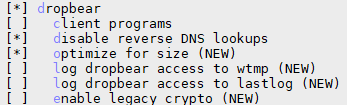
Networking applications - gesftpserver
完成后，重新make，并解压新的rootfs至~/rootfs。重启BBB，在shell下执行netstat -ant | grep :22检查22端口的Dropbear SSH Server是否已经运行。输入gdbserver检查是否已经安装gdb远程调试器。
Dropbear SSH Server要求必须设置密码才能使用SSH功能。输入passwd修改root用户的密码，改为较方便记忆的root或ceiec等字样。使用MobaXterm软件连接BBB的IP，检查SSH服务是否正常开启。
Eclipse的交叉编译环境配置
Eclipse配置
点击菜单Window- Preference，在弹出配置框中搜索path，在C/C++的Source Lookup Path中，添加一个File System Dir.，路径指向D:\gcc\arm-linux-gnueabihf\libc\usr\include（即gcc目录下的glibc头文件目录），并选中包含子目录选项。
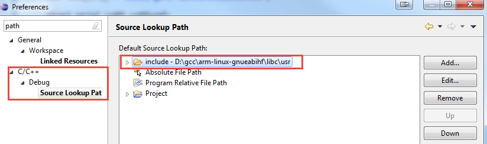
创建工程
按如下步骤新建一个工程：
选择C/C++ - C Project
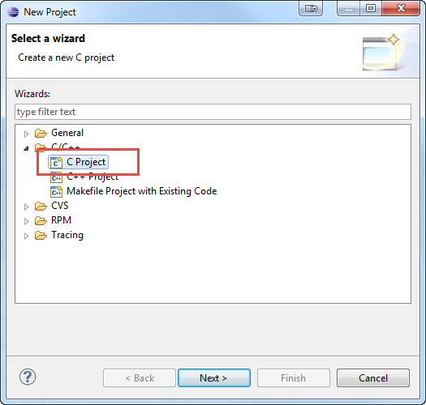
选择Cross GCC
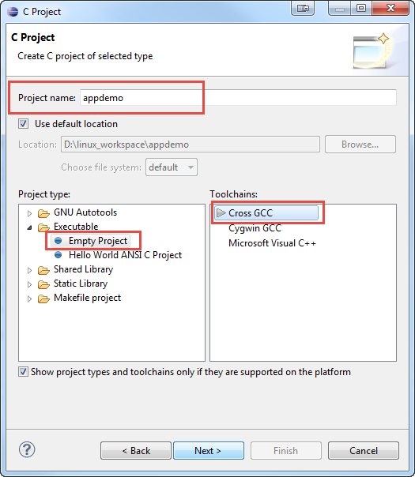
正确设置交叉编译器前缀，如arm-linux-gnueabihf-，并正确设置交叉编译器所在的路径
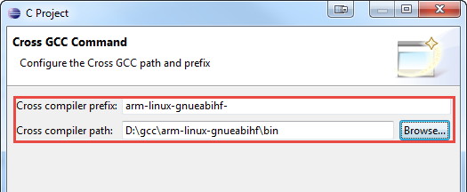
工程属性中，正确选择Internal Builder
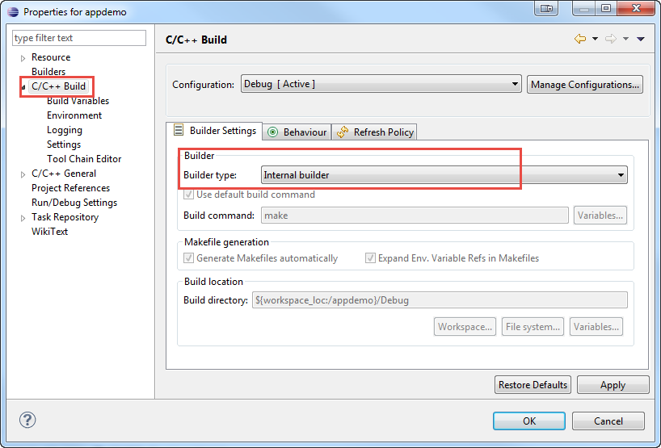
新建一个helloworld工程，检查编译是否正常
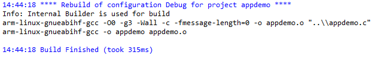
配置GDB远程调试器
选中左侧工程后，点击工具栏的Debug图标，选择Debug Configurations...
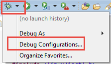
选择C/C++ Remote Application后，点击新建左上角新建按钮
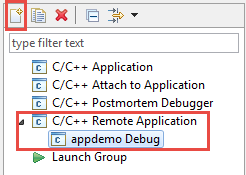
如是第一次调试，在弹出的对话框中，找到Connection下拉框右侧的New...按钮，创建一个新的远程SSH连接。
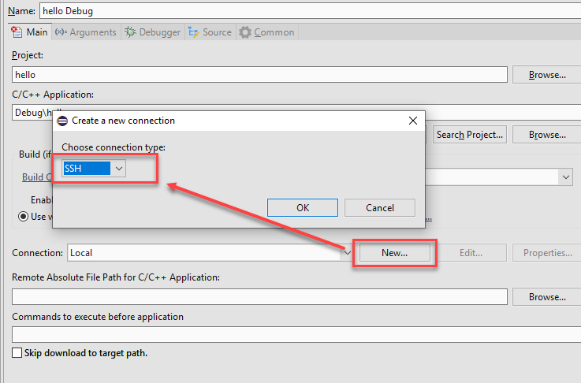
连接参数配置如下
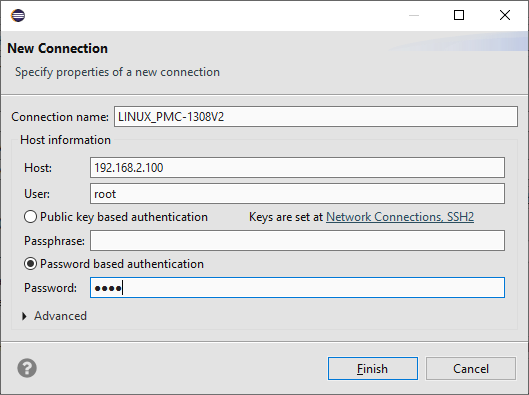
完成后，下拉框选择刚才新建的SSH远程连接，同时选择待调试的程序运行路径，如程序名为appdemo，则我们输入/run/app/appdemo，也可以选择其他运行路径。
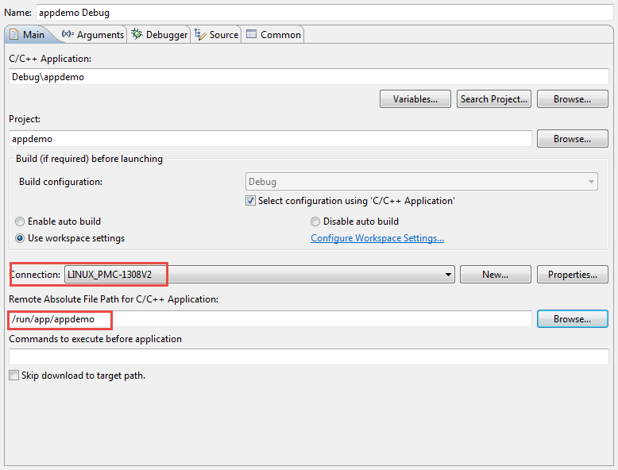
在Debugger选项卡中，指定gdb程序名为arm-linux-gnueabihf-gdb
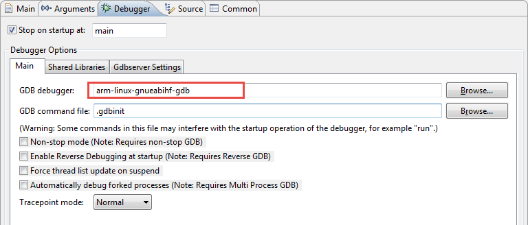
完成所有设置后，启动Debug，如能正常启动debugger，说明所有环境已经配置正确，接下来可以方便的像调试VxWorks、单片机一样，交叉编译调试ARM Linux程序了。
这里有几个注意事项：
- Eclipse支持同时对多个工程进行同时调试，请注意Debugger选项中有个gdbserver的端口设置，不同的工程应设置不同的值
- 如果调试期间意外断线，可能导致ARM侧gdbserver没有退出，需要手动kill掉gdbserver进程后再重启调试
基于Makefile的Eclipse工程
Makefile简介
Linux环境下的程序员需要使用GNU make来构建和管理自己的工程，一个工程中的源文件不计数，其按类型、功能、模块分别放在若干个目录中，makefile定义了一系列的规则来指定，哪些文件需要先编译，哪些文件需要后编译，哪些文件需要重新编译，甚至于进行更复杂的功能操。makefile就像一个Shell脚本一样，其中也可以执行操作系统的命令。
同时，在电脑的IDE下也可以使用自己的Makefile管理工程，如Eclipse下可以建立自己的Makefile project工程，缩小了不同IDE环境之间的编译差异。
使用Makefile控制编译，是实现Linux程序自动编译的重要环节，除测试项目外，正式项目均应使用Makefile作为工程配置文件，不应使用Eclipse工程。
安装GUN集成编译工具
Windows原生cmd终端不支持make命令，增加后就可以在电脑的shell下通过make编译工程
- 将
gnuTools（从部门FTP下载）拷贝到电脑的盘符的根目录下，以E:\gnuTools为例 - 设置系统
PATH环境变量值，分别在最前面增加E:\gnuTools\bin;的路径名
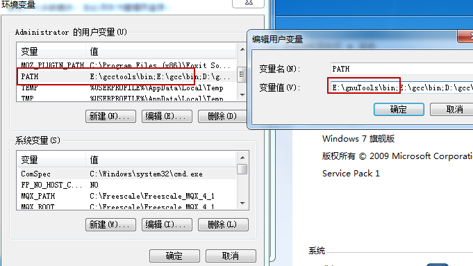
- 确认是否添加成功。重启或注销后打开cmd，运行
echo %PATH%，确认E:\gnuTools\bin;排在第一位。运行make，应能提示“No targets...”的提示而不是“Command not found”
Makefile文件
我们提供了一份可以快速上手开发的Makefile范本，默认编译规则是自动编译工程目录及所有子目录下的所有C文件。文件有详细的注释，通过自学和研究，可以对其进行改写优化，实现更多的功能。
Eclipse工程建立
使用Makefile的工程，同样可以使用Eclipse进行开发。在新建工程时，选择基于Makefile的项目即可。
阶段测试
练习1：完成Windows交叉编译环境的建立
请为自己的开发电脑建立Windows系统的交叉编译调试环境。完成上文所述的所有操作，为后面的所有学习内容搭建好环境。
练习2：建立基于Makefile的工程
本章节中，基于Makefile的工程介绍的比较简单。更多的注意事项、参数、路径等问题，请通过练习自己摸索，掌握GNU Make工具、Windows下gnu命令等知识和概念的灵活应用。
目标： 将hello world工程使用Makefile编译，既能在Eclipse中实现编译、在线调试，也能像第三方开源软件一样通过命令行在Linux系统中直接编译。